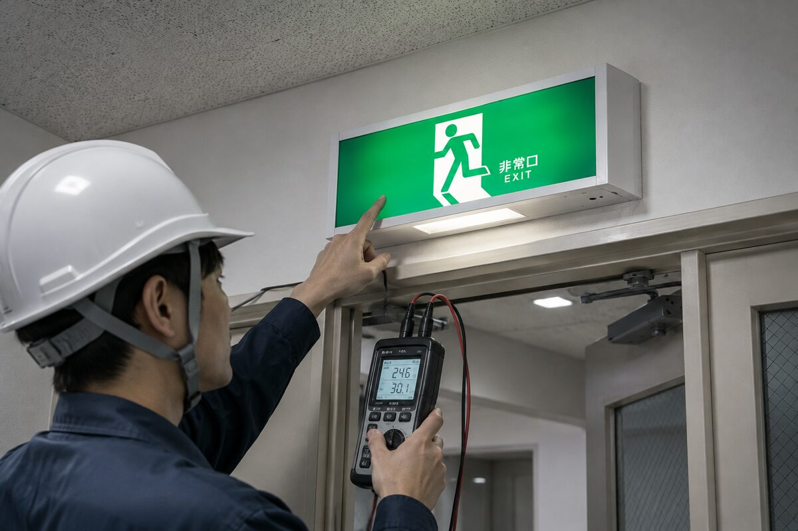
点検・診断
点灯・バッテリー・視認性の確認、不良箇所の洗い出し。
切れた・暗い誘導灯、消防点検の指摘、移設・増設・LED化まで。有資格者が外注に丸投げせず、点検から工事・是正報告まで自社で完結します。
誘導灯は避難の「最後の砦」。バッテリーやランプは消耗品で、気づかぬうちに切れていることも。1つでも当てはまればご相談ください。
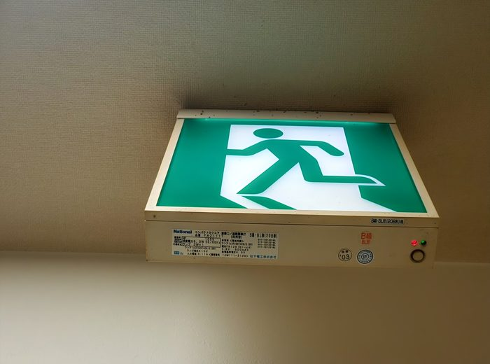
| 比較項目 | 誘導灯 | 非常用照明 |
|---|---|---|
| 根拠法令 | 消防法 | 建築基準法（第12条） |
| 目的 | 避難口・方向を「示す」 | 避難経路を「照らす」 |
| 見た目 | 緑の避難口マーク／緑矢印 | 白色灯（停電時点灯） |
| 点検・報告 | 消防設備点検 → 消防へ | 定期検査 → 特定行政庁へ |
混同されやすいが制度は別。当社は誘導灯（消防法）も非常灯（建築基準法）も自社で対応でき、二重発注や業者間の連絡待ちがありません。

点灯・バッテリー・視認性の確認、不良箇所の洗い出し。
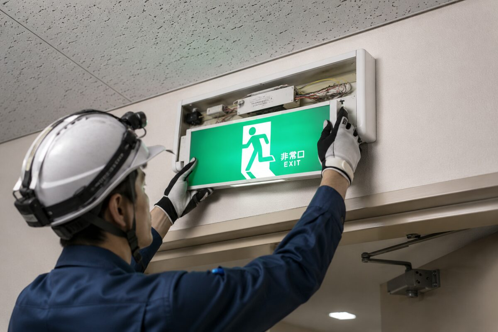
器具・内蔵バッテリー・ランプの交換。切れた・暗い誘導灯の復旧。
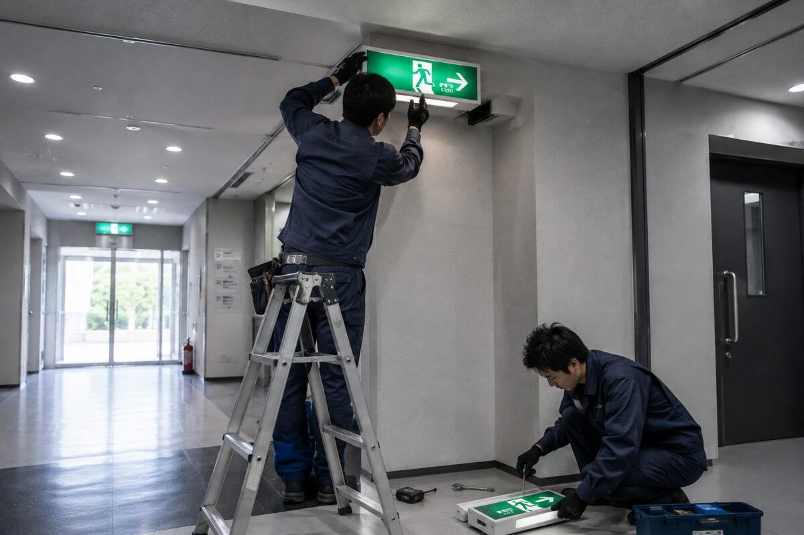
レイアウト変更に伴う位置変更、死角への追加設置。
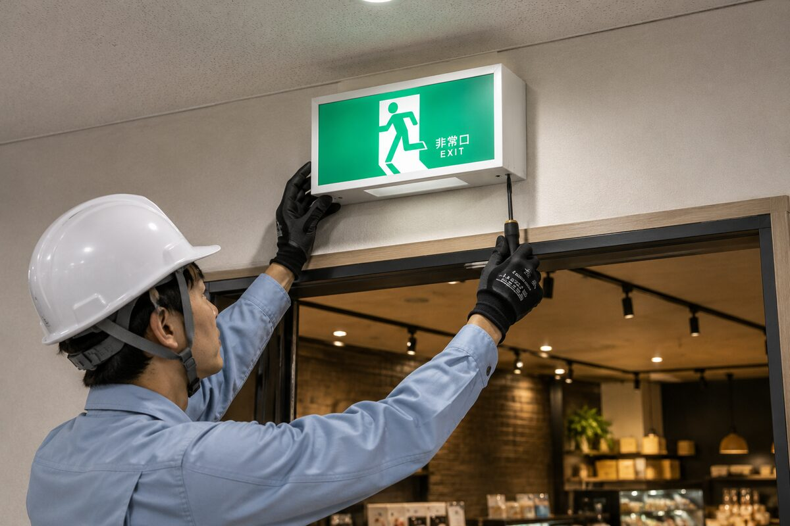
テナント入居・店舗開業・用途変更に伴う新規設置。
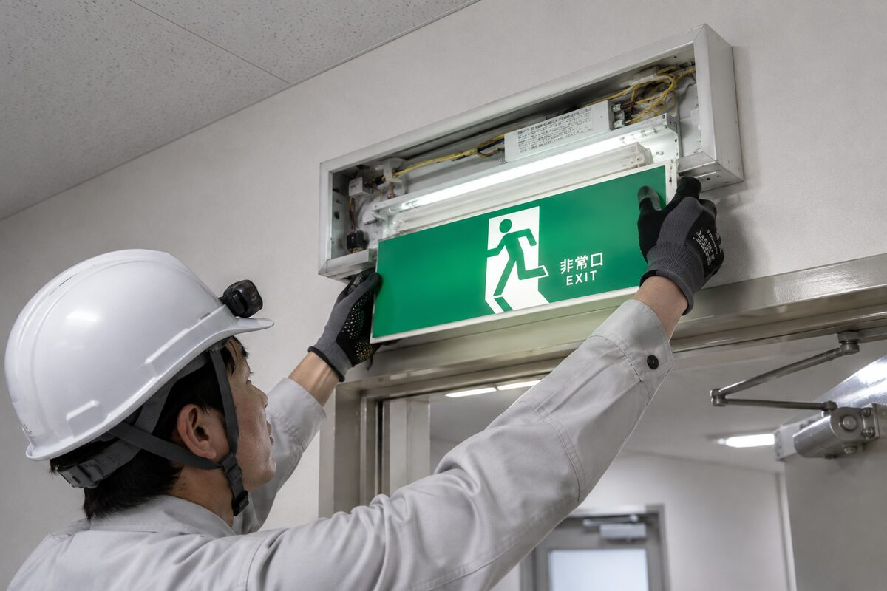
電球・蛍光灯からLEDへ。省エネ・長寿命・視認性向上。
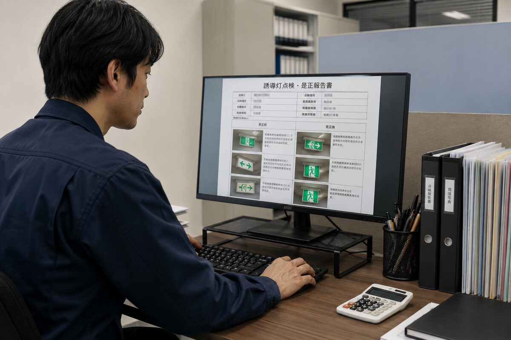
指摘された不良の是正と、報告書作成まで一貫対応。
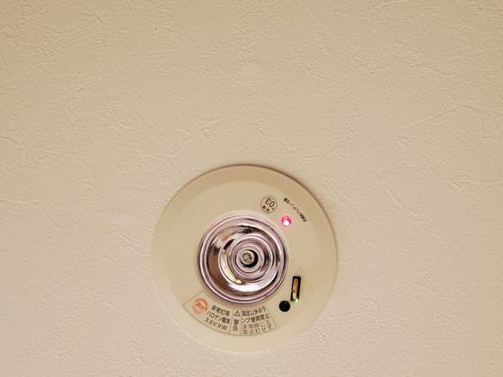
「不良」「要是正」の指摘を受けた書類をお手元に、まずはご相談ください。
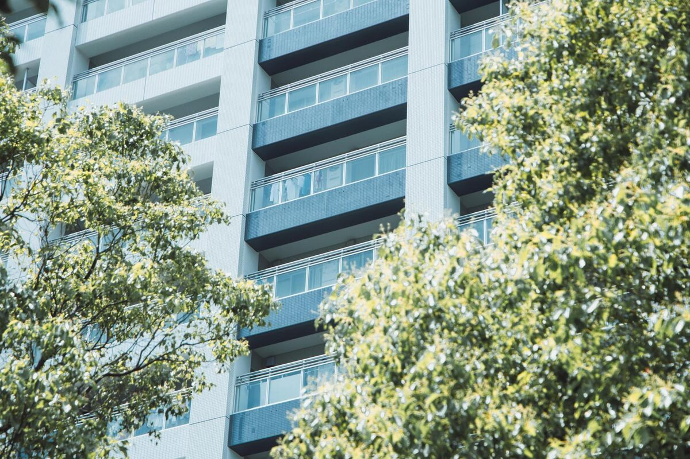
共用廊下・階段・エントランス。総会・居住者告知に配慮。
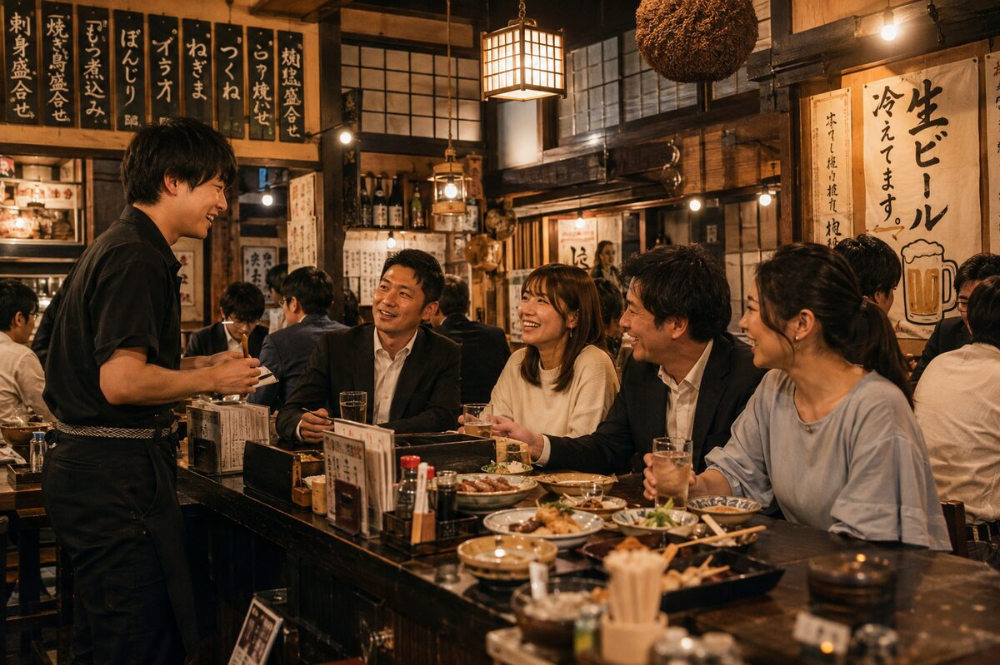
内装工事に連動した設置・移設。開業前検査の指摘対応。
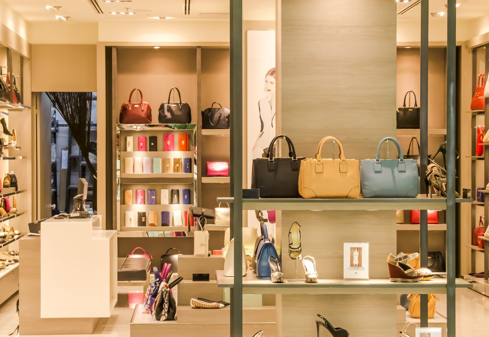
開業前の必要設置。レイアウト変更時の移設。
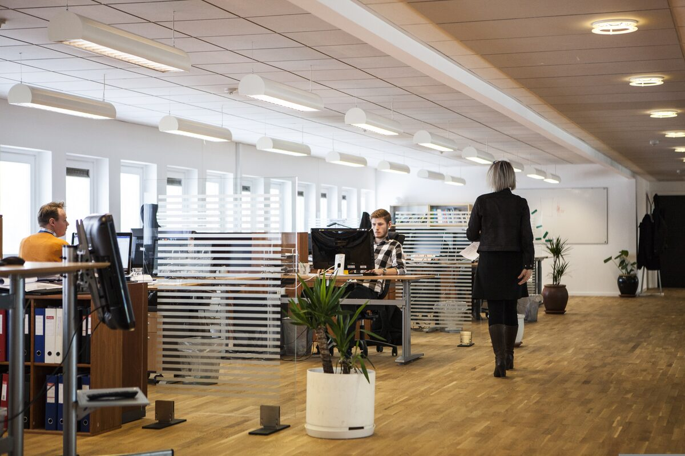
テナント区画変更に伴う移設・増設。
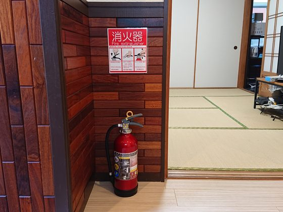
用途変更・新規開業に伴う設置（非常灯とセット）。
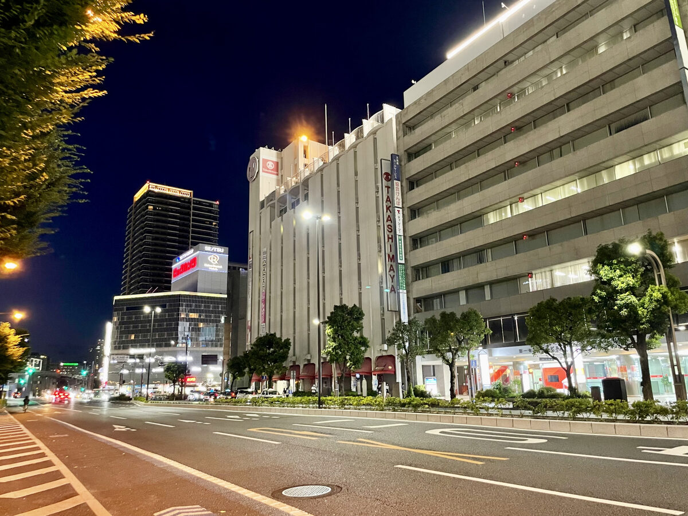
区画・台数が多い建物の一括対応。
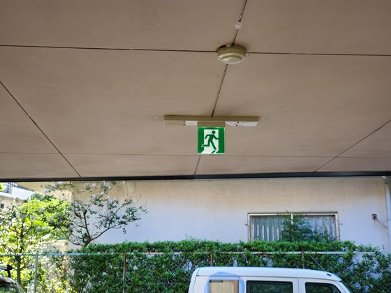
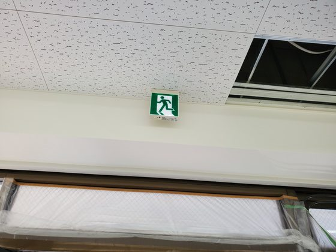
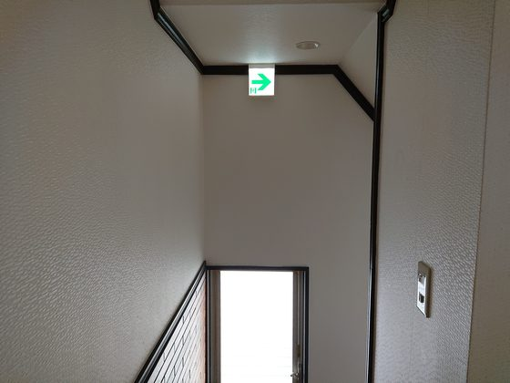
複数物件割引・非常灯との同時依頼割引あり ／ 横浜・川崎・東京対応